Kasaragod
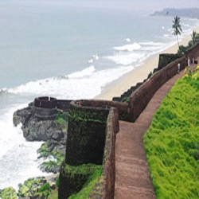Kasaragod is often described as the land of forts and gods. The place is noted for its ritual dance Theyyam, an art that blends dance, myth, drama, music, art and theatrics. A performing art popular in the northern districts of Kerala, Theyyam can be enjoyed in all its glory at Kasaragod.
Read MoreKannur
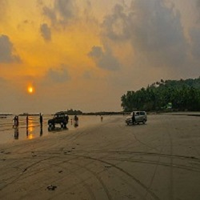Kannur is believed to have got its name from being the land of Kannan or Krishna. True to the legend there are many famous temples in the region. The district is also famous for many alluring spots of interest including Payyambalam and Muzhuppilangadi beach, Arakkal museum
Read MoreWayanad
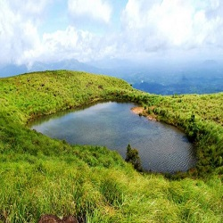Wayanad is unique in that it is situated in an elevated picturesque mountainous plateau in the Western Ghats. The vast stretches of mist - capped mountains, green meadows of valleys, white water springs, blue water lakes and wild forests express the splendid natural beauty of Wayanad.
Read MoreKozhikode
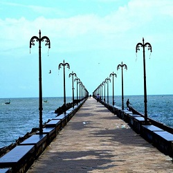Kozhikode is one of the best cities in Kerala. Endowed with lush green countrysides, serene beaches, historic sites, wildlife sanctuaries, rivers, and hills, this city enchants both its inhabitants and its guests. With its unique culture and friendly ambiance, Kozhikode is a wondrous destination for all.
Read MoreMalappuram
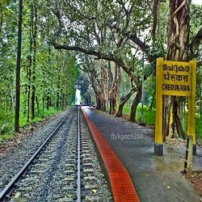Malappuram has made numerous contributions to the cultural heritage of Kerala. A famous centre for Hindu-Vedic learning and Islamic philosophy, the temples and mosques of this region are well known for their spectacular festivals.
Read MorePalakkad
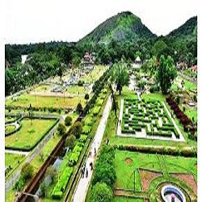Palakkad, the largest producer of rice is known as the granary of Kerala. As many as eight rivers originate from the Palakkad hills. Among the rivers include Bharathapuzha, the longest river in the state. The hilly district has 136257 hectares of reserve forest including Silent Valley
Read MoreThrissur
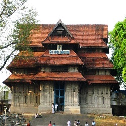Thrissur (formerly Trichur) is a district of Kerala situated in the central part of that state. Thrissur is known as the cultural capital of Kerala, and the land of Poorams. The district is known for its ancient temples, churches, and mosques. Thrissur Pooram is the most colourful temple festival in Kerala.
Read MoreErnakulam

The district includes Kochi, also known as the IT and commercial capital of Kerala, which is famous for its ancient Hindu temples, churches, and mosques. The district also hosts the highest number of international and domestic tourists in Kerala state. The most commonly spoken language in Ernakulam is Malayalam.
Read MoreIdukki
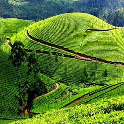Idukki district is a densely forested, mountainous region in the south Indian state of Kerala. In the north, Anamudi mountain towers over Eravikulam National Park, where the rare, blue Neelakurinji flower blooms every 12 years. Nearby, Munnar is a hill station known for its sprawling tea plantations and Tea Museum.
Read MoreKottayam
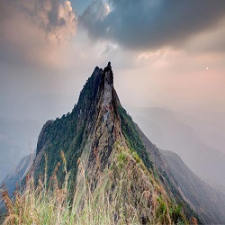Kottayam is also called as “Akshara Nagari” which means the “city of letters” considering its contribution to print media and literature. Kottayam Town is the first town in India to have achieved 100% literacy (a remarkable feat achieved as early as in 1989).
Read MoreAlappuzha
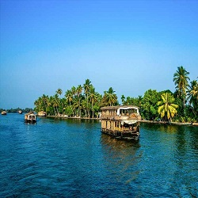Located in the heart of the slithering backwaters of Kerala, Alleppey or Alappuzha is often termed the “Venice of the East”. The town is among the oldest planned towns in India and is famous for its several backwater canals, beaches, paddy fields and lagoons.
Read MorePathanamthitta
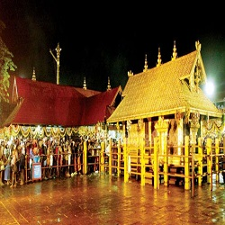Pathanamthitta district is known as the Headquarters of Pilgrimage Tourism, of the Kerala State. Situated near the Western Ghats and bordered by the hills, Pathanamthitta district is a treat to eyes with its vast unending stretches of forests, rivers and rural landscapes.
Read MoreKollam
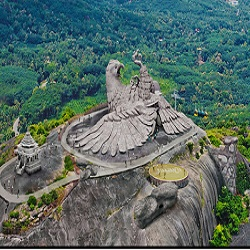It is known for cashew processing and coir manufacturing. Ashtamudi Lake is considered the southern gateway to the backwaters of Kerala and is a prominent tourist destination at Kollam.
Read MoreThiruvananthapuram
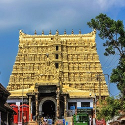Thiruvananthapuram is a major tourist centre, known for the Padmanabhaswamy Temple, the beaches of Kovalam and Varkala, the backwaters of Poovar and Anchuthengu and its Western Ghats tracts of Ponmudi and the Agastyamala.
Read More